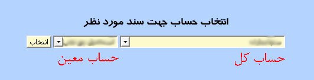

۱-ثبت سند
در پنل ثبت سند کاربر می تواند سندهای مورد نیاز خود را ثبت, ویرایش و حذف نماید.
برای ثبت سند جدید ابتدا باید بر روی دکمه جدید در قسمت بالای صفحه کلیک کرده تا آخرین شماره سند تولید شود سپس می توانید از قسمت پایین پنل حساب سند مورد نظر را با کلیک بر روی دکمه انتخاب حساب را انتخاب نمایید.

پس از انتخاب حساب باید وضعیت بدهکار/بستانکار بودن سند, توضیحات و مبلغ مورد نظر را وارد و در انتها بر روی دکمه ثبت کلیک نمایید. پس از وارد نمودن سندهای مربوط به این شماره سند باید اسناد ثبت نهایی شود. برای نهایی کردن سند بر روی دکمه ثبت نهایی در پایین پنل کلیک نمایید.
مجموع مقادیر بدهکار, بستانکار و جمع کل و همچنین تراز بودن اسناد ثبت شده در قسمت پایین تمام سندها نمایش داده می شود.
جهت ویرایش سند, شماره سند مورد نظر را در قسمت شماره سند وارد نموده و بر روی دکمه ویرایش کلیک نمایید.
می توان برای جستجو بر اساس توضیحات اسناد, توضیح مورد نظر را در قسمت جستجو در توضیحات وارد نموده و بر روی دکمه جستجو کلیک نمایید.
برای تعیین تعداد سندهای نمایش داده شده در یک صفحه از لیست کشویی کنار دکمه انتخاب حساب, تعداد را انتخاب و بر روی دکمه نمایش کلیک نمایید.
جهت ویرایش مقادیر هر آیتم بر روی آن کلیک نمایید و پس از تصحیح کلید Enter را بزنید.
جهت حذف تکی هر آیتم, موس خود را بر روی شماره ردیف آیتم برده و بر روی لینک حذف کلیک نمایید.
جهت حذف گروهی آیتم ها, آیتم های مورد نظر را انتخاب و بر روی دکمه حذف کلیک نمایید.